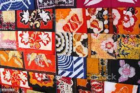
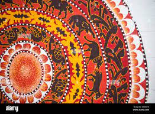
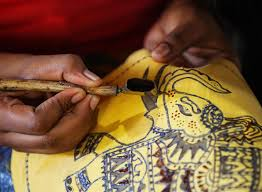
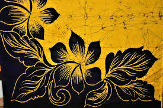
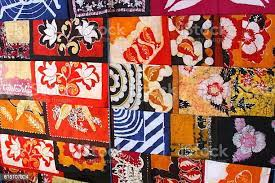
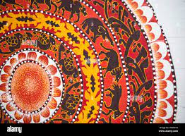
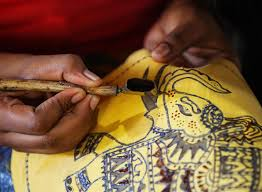
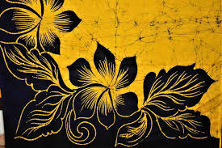
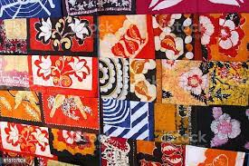
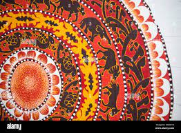
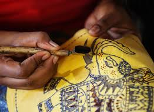
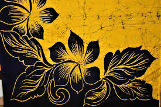
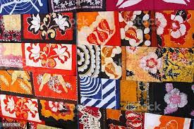
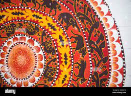
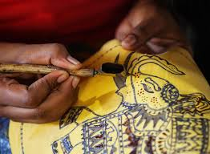
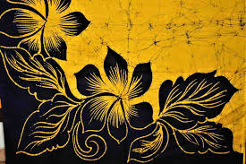
Batik is a textile dyeing method that is popularly used to create fabrics for clothing and household décor.
While somewhat similar in appearance to tie-dying, the process for how to batik is a bit more complex, with hot wax applied to fabric prior to dye application and removed via boiling after the dying is complete. This method is known as dye resistance, with the wax serving to shield certain areas from being exposed to the dye for a varied, crinkled look upon completion. Batik art can also be used to create more detailed and intricate work, including well-defined patterns and designs.
Like many ancient art forms, historians have had some trouble pinning down the precise history of batik art. However, we do know that batik originated in Java as part of a long tradition of Indonesian textile designs, and that it is a distinctly Javanese art form, even as it has made its way through other regions and continents.
What makes batik so special is both its history and its longevity. Batik is strongly rooted in the craft of Indonesian textile design, itself an honored and ongoing tradition. It is also often used to express unique ideas and spiritual beliefs, with certain patterns serving to indicate diverse notions in human history, religion, and creativity.
It’s impossible to separate batik art from the cultural heritage of both the island of Java and Indonesia as a whole. And even as the technique is shared and modified around the globe, it remains centered in its origins—and by default, it remains a practice that is as much about its cultural and spiritual significance as it is its beautiful designs
As for how to do batik yourself, Daslin outlines a complete list of the tools and materials that you’ll need. This includes:
Other tools you’ll need to have on hand:
You’ve got the tools, so now what is the process for batik? We’ve provided a quick overview of Daslin’s lesson, and we recommend watching her course for a more in-depth tutorial. Do these steps in a well-ventilated area to protect yourself from any fumes.
The first step in how to make batik fabric is to transfer your design to your piece of cotton. You’ll need your reference image, tape, scissors, and an HB pencil, as well as your fabric.
Start by pre-washing your fabric by hand (use a gentle fabric detergent like Synthrapol) and hanging it to dry completely, then iron out any wrinkles and use your scissors to cut it down to your desired size.
To transfer the design, lay your reference image on a flat surface and place your fabric over it. Tape both the design and the fabric down so that they stay in place, then begin gently tracing your design with your pencil. Use a light touch and steady hand, and remove the tape—and your fabric—once you’re done.
What kind of wax is used for batik? You’ll want a mixture of paraffin and beeswax, which you can either combine yourself or buy pre-combined. Having the right wax is essential to how to make batik fabric, since using the incorrect variety won’t provide you with the right amount of dye resistance.
Melt your wax and dip your tjanting tools in the hot wax to fill their basins. You’ll want to apply wax to any area on your fabric that you want to remain un-dyed, which you’ll do by outlining the area with wax applied by your tjanting tool and then using your small paintbrushes to spread the wax throughout the rest of the desired area.
Choose the color that you want to use for your batik project and make a dye bath following the instructions on the dye packaging. Again, you may need to mix in soda ash or salt to set the pH balance, but not always.
With your rubber gloves on, dip your waxed fabric into your dye bath and allow to soak for 30 minutes, using more or less time depending on how dark you want the color to be. Make sure your fabric remains completely submerged, since any contact with the air will begin to set the color. Use your wooden spoon to press the fabric into the dye bath, as well as to give it the occasional stir.
When the time is up, take your fabric out of the dye bath and hang it to dry, being sure not to squeeze out any of the dye as you do.
The last step in how to do batik is to remove the wax resist. Take your dyed and dried fabric and place it between two pieces of blank newsprint. Iron it on the correct setting recommended for the fabric. For cotton, that’s usually medium. It’s best to use an old iron for this process rather than the one you use for your everyday clothes, just in case there’s any transfer of dye.
Replace the top layer of newsprint as needed if it gets saturated. Once you’ve removed as much wax as possible through ironing, take your fabric outside to boil out the rest of the wax. You’ll want to bring your old pot of water, your small travel stove to get it to a boil, and a bowl or bucket of cold water.
Place the fabric directly into the boiling water for three minutes to remove any lingering wax, then remove it and transfer it immediately into a bucket of cold water. This will solidify any wax that is still remaining, which you’ll then see floating in the water.
Repeat the boiling and cold water process again, then let your fabric dry and admire your beautiful work!
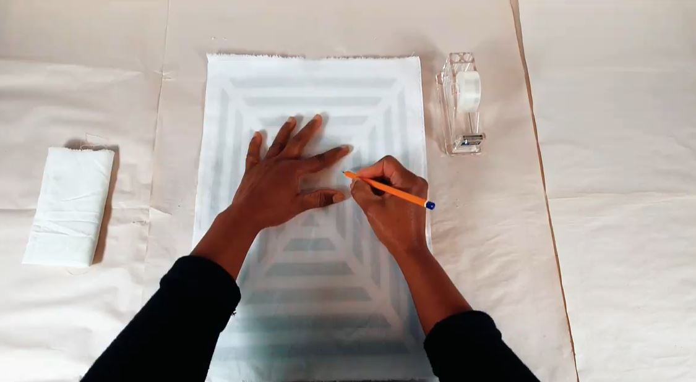